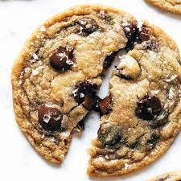

Chocolate Chip Cookies
Step into a world of warmth and delight as I introduce you to my Chocolate Chip Cookies
recipe. These cookies are not just a treat for the taste buds but a celebration of
indulgence and comfort. Imagine the tantalizing aroma of golden butter as it dances in the
pan, infusing your kitchen with its rich essence. Picture the perfect balance of sweetness
from the chocolate chips and the subtle nuttiness from the toasted butter, coming together
in each soft, chewy bite. Whether enjoyed fresh out of the oven with a glass of cold milk or
savored as a midnight snack, these cookies are sure to bring a smile to your face and warmth
to your heart. So, grab your apron and let's embark on a journey to create moments of pure
bliss with our Chocolate Chip Cookies.

Ingredients
- 1 cup (2 sticks) unsalted butter
- 1 cup packed light brown sugar
- 1/2 cup granulated sugar
- 2 large eggs
- 1 teaspoon vanilla extract
- 2 1/4 cups all-purpose flour
- 1 teaspoon baking soda
- 1/2 teaspoon salt
- 1 1/2 cups semisweet chocolate chips
- Optional: Flaky sea salt for sprinkling on top
Instructions
- Preheat the oven: Preheat your oven to 350°F (175°C). Line a
baking sheet with parchment paper or silicone baking mat.
- Toast the Butter: In a medium saucepan, melt the butter over
medium heat. Continue cooking, swirling the pan occasionally, until the butter turns
golden brown and smells nutty, about 5-7 minutes. Be careful not to burn it. Remove
from heat and let it cool for a few minutes.
- Prepare the Dough: In a large mixing bowl,
combine the toasted butter, brown sugar, and granulated sugar. Stir until well
combined and smooth. Add the eggs one at a time, mixing well after each addition.
Stir in the vanilla extract.
- Combine Dry Ingredients: In a separate bowl, whisk together the
flour, baking soda, and salt.
- Mix the Dough: Gradually add the dry ingredients to the wet
ingredients, mixing until just combined. Fold in the chocolate chips until evenly
distributed throughout the dough.
- Cookies: Drop rounded tablespoons of dough onto the prepared
baking sheet, leaving some space between each cookie for spreading. If desired,
gently press a few additional chocolate chips onto the tops of the cookies. Sprinkle
lightly with flaky sea salt, if using.
- Bake: Place the baking sheet in the preheated oven and bake for
10-12 minutes, or until the edges are golden brown and the centers are set. If you
prefer chewier cookies, slightly underbake them.
- Cool: Remove the baking sheet from the oven and let the cookies
cool on the baking sheet for 5 minutes before transferring them to a wire rack to
cool completely.
- Enjoy: Once cooled, serve and enjoy your delicious Chocolate
Chip Cookies! These cookies are best enjoyed fresh but can be stored in an airtight
container at room temperature for up to 5 days.